![A general abstraction of the performance estimation process: The available data is (repeatedly) split into (a set of) training data and test data (data splitting / resampling process). The learner is applied to each training data and produces intermediate models (learning process). Each intermediate model along with its associated test data produces predictions. The performance measure compares these predictions with the associated actual target values from each test data and computes a performance value for each test data. All performance values are aggregated into a scalar value to estimate the generalization performance (evaluation process).](Figures/ml_abstraction-2.svg)
3 Evaluation, Resampling and Benchmarking
Giuseppe Casalicchio ![]()
Lukas Burk
Abstract
Estimating the generalization performance of a machine learning algorithm on a given task requires additional data not used during training. Resampling refers to the process of repeatedly splitting the available data into training and test sets to enable unbiased performance estimation. This chapter introduces common resampling strategies and illustrates their use with the mlr3 ecosystem. Benchmarking builds upon resampling, encompassing the fair comparison of multiple machine learning algorithms on at least one task. We show how benchmarking can be performed within the mlr3 ecosystem, from the construction of benchmark designs to the statistical analysis of the benchmark results.
In supervised machine learning, a model which is deployed in practice is expected to generalize well to new, unseen data. Accurate estimation of this so-called generalization performance is crucial for many aspects of machine learning application and research — whether we want to fairly compare a novel algorithm with established ones or to find the best algorithm for a particular task after tuning — we always rely on this performance estimate. Hence, performance estimation is a fundamental concept used for model selection, model comparison, and hyperparameter tuning (which will be discussed in depth in Chapter 4) in supervised machine learning. To properly assess the generalization performance of a model, we must first decide on a performance measure that is appropriate for our given task and evaluation goal. A performance measure typically computes a numeric score indicating, e.g., how well the model predictions match the ground truth. However, it may also reflect other qualities such as the time for training a model. An overview of some common performance measures implemented in mlr3, including a short description and a basic mathematical definition, can be found by following the link provided in the overview table under Measures overview in Appendix Appendix D.
Once we have decided on a performance measure, the next step is to adopt a strategy that defines how to use the available data to estimate the generalization performance. Unfortunately, using the same data to train and test a model is a bad strategy as it would lead to an overly optimistic performance estimate. For example, an overfitted model may perfectly fit the data on which it was trained, but may not generalize well to new data. Assessing its performance using the same data it was trained would misleadingly suggest a well-performing model. It is therefore common practice to test a model on independent data not used to train a model. However, we typically train a deployed model on all available data, which leaves no data to assess its generalization performance. To address this issue, existing performance estimation strategies withhold a subset of the available data for evaluation purposes. This so-called test set serves as unseen data and is used to estimate the generalization performance.
A common simple strategy is the holdout method, which randomly partitions the data into a single training and test set using a pre-defined splitting ratio. The training set is used to create an intermediate model, whose sole purpose is to estimate the performance using the test set. This performance estimate is then used as a proxy for the performance of the final model trained on all available data and deployed in practice. Ideally, the training set should be as large as all available data so that the intermediate model represents the final model well. If the training data is much smaller, the intermediate model learns less complex relationships compared to the final model, resulting in a pessimistically biased performance estimate. On the other hand, we also want as much test data as possible to reliably estimate the generalization performance. However, both goals are not possible if we have only access to a limited amount of data.
To address this issue, resampling strategies (see Section 3.2) repeatedly split all available data into multiple training and test sets, with one repetition corresponding to what is called a resampling iteration in mlr3. An intermediate model is then trained on each training set and the remaining test set is used to measure the performance in each resampling iteration. The generalization performance is finally estimated by the averaged performance over multiple resampling iterations (see Figure 3.1 for an illustration). Resampling methods allow using more data points for testing, while keeping the training sets as large as possible. Specifically, repeating the data splitting process allows using all available data points to assess the performance, as each data point can be ensured to be part of the test set in at least one resampling iteration. A higher number of resampling iterations can reduce the variance and result in a more reliable performance estimate. It also reduces the risk of the performance estimate being strongly affected by an unlucky split that does not reflect the original data distribution well, which is a known issue of the holdout method. However, since resampling strategies create multiple intermediate models trained on different parts of the available data and average their performance, they evaluate the performance of the learning algorithm that induced these models, rather than the performance of the final model which is deployed in practice. It is therefore important to train the intermediate models on nearly all data points from the same distribution so that the intermediate models and the final model are similar. If we only have access to a limited amount of data, the best we can do is to use the performance of the learning algorithm as a proxy for the performance of the final model. In Section 3.2, we will learn how to estimate the generalization performance of a Learner using the mlr3 package.
3.1 Quick Start
In the previous chapter, we have applied the holdout method by manually partitioning the data contained in a Task object into a single training set (to train the model) and a single test set (to estimate the generalization performance). As a quick start into resampling and benchmarking with the mlr3 package, we show a short example of how to do this with the resample() and benchmark() convenience functions. Specifically, we show how to estimate the generalization performance of a learner on a given task by the holdout method using resample() and how to use benchmark() to compare two learners on a task.
We first define the corresponding Task and Learner objects used throughout this chapter as follows:
The next obvious step is to select a suitable performance measure, which can be done as explained in Section 2.3 using the mlr_measures dictionary. Passing the dictionary to the as.data.table function provides an overview of implemented measures with additional information from which we can select a suitable performance measure, which we print here in two parts for compactness:
key label task_type
1: aic Akaika Information Criterion <NA>
2: bic Bayesian Information Criterion <NA>
3: classif.acc Classification Accuracy classif
4: classif.auc Area Under the ROC Curve classif
5: classif.bacc Balanced Accuracy classif key packages predict_type task_properties
1: aic mlr3 response
2: bic mlr3 response
3: classif.acc mlr3,mlr3measures response
4: classif.auc mlr3,mlr3measures prob twoclass
5: classif.bacc mlr3,mlr3measures response Depending on our task at hand, we will look for a measure that fits our "task_type" ("classif" for penguins) and "task_properties". The latter is important since measures like AUC "classif.auc" are only defined for binary tasks, which is indicated by "twoclass" in the "task_properties" column — multiclass-generalizations are available, but need to be selected explicitly. Similarly, some measures require the learner to predict probabilities, while others require class predictions. In our learner above, we have already selected predict_type = "prob", which is often required for measures that are not defined on class labels, such as the aforementioned AUC.
Tip
More information about a performance measure, including its mathematical definition, can be obtained using the $help() method of a Measure object, which opens the help page of the corresponding measure, e.g., msr("classif.acc")$help() provides all information about the classification accuracy.
The code example below shows how to apply holdout (specified using rsmp("holdout")) on the previously specified mlr_tasks_penguins task to estimate classification accuracy (using msr("classif.acc")) of the previously defined decision tree learner from the rpart package:
resampling = rsmp("holdout")
rr = resample(task = task, learner = learner, resampling = resampling)
rr$aggregate(msr("classif.acc"))classif.acc
0.9391304 The benchmark() function internally uses the resample() function to estimate the performance based on a resampling strategy. For illustration, we show a minimal code example that compares the classification accuracy of the decision tree against a featureless learner which always predicts the majority class:
lrns = c(learner, lrn("classif.featureless"))
d = benchmark_grid(task = task, learner = lrns, resampling = resampling)
bmr = benchmark(design = d)
acc = bmr$aggregate(msr("classif.acc"))
acc[, .(task_id, learner_id, classif.acc)] task_id learner_id classif.acc
1: penguins classif.rpart 0.9565217
2: penguins classif.featureless 0.4695652Further details on resampling and benchmarking can be found in Section 3.2 and Section 3.3.
3.2 Resampling
Existing resampling strategies differ in how they partition the available data into training and test set, and a comprehensive overview can be found in Japkowicz and Shah (2011). For example, the \(k\)-fold cross-validation method randomly partitions the data into \(k\) subsets, called folds (see Figure 3.2). Then \(k\) models are trained on training data consisting of \(k-1\) of the folds, with the remaining fold being used as test data exactly once in each of the \(k\) iterations. The \(k\) performance estimates resulting from each fold are then averaged to obtain a more reliable performance estimate. This makes cross-validation a popular strategy, as each observation is guaranteed to be used in one of the test sets throughout the procedure, making efficient use of the available data for performance estimation. Several variations of cross-validation exist, including repeated \(k\)-fold cross-validation where the entire process illustrated in Figure 3.2 is repeated multiple times, and leave-one-out cross-validation where the test set in each fold consists of exactly one observation.
Other well-known resampling strategies include subsampling and bootstrapping. Subsampling — also known as repeated holdout — repeats the holdout method and creates multiple train-test splits, taking into account the ratio of observations to be included in the training sets. Bootstrapping creates training sets by randomly drawing observations from all available data with replacement. Some observations in the training sets may appear more than once, while the other observations that do not appear at all are used as test set. The choice of the resampling strategy usually depends on the specific task at hand and the goals of the performance assessment. Properties and pitfalls of different resampling techniques have been widely studied and discussed in the literature, see e.g., Bengio and Grandvalet (2003), Molinaro, Simon, and Pfeiffer (2005), Kim (2009), Bischl et al. (2012).
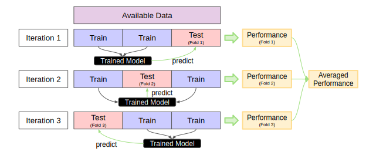
In mlr3, many resampling strategies have already been implemented so that users do not have to implement them from scratch, which can be tedious and error-prone. In this section, we cover how to use mlr3 to
- query (Section 3.2.1) implemented resampling strategies,
- construct (Section 3.2.2) resampling objects for a selected resampling strategy,
- instantiate (Section 3.2.3) the train-test splits of a resampling object on a given task, and
- execute (Section 3.2.4) the selected resampling strategy on a learning algorithm to obtain resampling results.
3.2.1 Query
All implemented resampling strategies can be queried by looking at the mlr_resamplings dictionary (also listed in Appendix Appendix D). Passing the dictionary to the as.data.table function provides a more structured output with additional information:
key label params iters
1: bootstrap Bootstrap ratio,repeats 30
2: custom Custom Splits NA
3: custom_cv Custom Split Cross-Validation NA
4: cv Cross-Validation folds 10
5: holdout Holdout ratio 1
6: insample Insample Resampling 1
7: loo Leave-One-Out NA
8: repeated_cv Repeated Cross-Validation folds,repeats 100
9: subsampling Subsampling ratio,repeats 30For example, the column params shows the parameters of each resampling strategy (e.g., the train-test splitting ratio or the number of repeats) and the column iters shows the default value for the number of performed resampling iterations (i.e., the number of model fits).
3.2.2 Construction
Once we have decided on a resampling strategy, we have to construct a Resampling object via the function rsmp() which will define the resampling strategy we want to employ. For example, to construct a Resampling object for holdout, we use the value of the key column from the mlr_resamplings dictionary and pass it to the convenience function rsmp():
<ResamplingHoldout>: Holdout
* Iterations: 1
* Instantiated: FALSE
* Parameters: ratio=0.6667By default, the holdout method will use 2/3 of the data as training set and 1/3 as test set. We can adjust this by specifying the ratio parameter for holdout either during construction or by updating the ratio parameter afterwards. For example, we construct a Resampling object for holdout with a 80:20 split (see first line in the code below) then update to 50:50 (see second line in the code below):
Holdout only estimates the generalization performance using a single test set. To obtain a more reliable performance estimate by making use of all available data, we may use other resampling strategies. For example, we could also set up a 10-fold cross-validation via
By default, the $is_instantiated field of a Resampling object constructed as shown above is set to FALSE. This means that the resampling strategy is not yet applied to a task, i.e., the train-test splits are not contained in the Resampling object.
3.2.3 Instantiation
To generate the train-test splits for a given task, we need to instantiate a resampling strategy by calling the $instantiate() method of the previously constructed Resampling object on a Task. This will manifest a fixed partition and store the row indices for the training and test sets directly in the Resampling object. We can access these rows via the $train_set() and $test_set() methods:
resampling = rsmp("holdout", ratio = 0.8)
resampling$instantiate(task)
train_ids = resampling$train_set(1)
test_ids = resampling$test_set(1)
str(train_ids) int [1:275] 2 3 4 5 6 7 8 9 10 11 ... int [1:69] 1 12 16 22 26 28 30 32 37 38 ...Instantiation is especially relevant is when the aim is to fairly compare multiple learners. Here, it is crucial to use the same train-test splits to obtain comparable results. That is, we need to ensure that all learners to be compared use the same training data to build a model and that they use the same test data to evaluate the model performance.
Tip
In Section 3.3, you will learn about the ref ("benchmark()") function, which automatically instantiates Resampling objects on all tasks to ensure a fair comparison by making use of the exact same training and test sets for learning and evaluating the fitted intermediate models.
3.2.4 Execution
Calling the function resample() on a task, learner, and constructed resampling object returns a ResampleResult object which contains all information needed to estimate the generalization performance. Specifically, the function will internally use the learner to train a model for each training set determined by the resampling strategy and store the model predictions of each test set. We can apply the print or as.data.table function to a ResampleResult object to obtain some basic information:
<ResampleResult> of 4 iterations
* Task: penguins
* Learner: classif.rpart
* Warnings: 0 in 0 iterations
* Errors: 0 in 0 iterations task learner resampling iteration
1: <TaskClassif[50]> <LearnerClassifRpart[38]> <ResamplingCV[20]> 1
2: <TaskClassif[50]> <LearnerClassifRpart[38]> <ResamplingCV[20]> 2
3: <TaskClassif[50]> <LearnerClassifRpart[38]> <ResamplingCV[20]> 3
4: <TaskClassif[50]> <LearnerClassifRpart[38]> <ResamplingCV[20]> 4
1 variable not shown: [prediction]Here, we used 4-fold cross-validation as resampling strategy. The resulting ResampleResult object (stored as rr) provides various methods to access the stored information. The two most relevant methods for performance assessment are $score() and $aggregate().
In Section 2.3, we learned that Prediction objects contain both model predictions and ground truth values, which are used to calculate the performance measure using the $score() method. Similarly, we can use the $score() method of a ResampleResult object to calculate the performance measure for each resampling iteration separately. This means that the $score() method produces one value per resampling iteration that reflects the performance estimate of the intermediate model trained in the corresponding iteration. By default, $score() uses the test set in each resampling iteration to calculate the performance measure.
Tip
We are not limited to scoring predictions on the test set — if we set the argument predict_sets = "train" within the $score() method, we calculate the performance measure of each resampling iteration based on the training set instead of the test set.
In the code example below, we explicitly use the classification accuracy (classif.acc) as performance measure and pass it to the $score() method to obtain the estimated performance of each resampling iteration separately:
iteration classif.acc
1: 1 0.9418605
2: 2 0.9767442
3: 3 0.9069767
4: 4 0.9534884
Tip
If we do not explicitly pass a Measure object to the $score() method, the classification error (classif.ce) and the mean squared error (regr.mse) are used as defaults for classification and regression tasks respectively.
Similarly, we can pass Measure objects to the $aggregate() method to calculate an aggregated score across all resampling iterations. The type of aggregation is usually determined by the Measure object (see also the fields $average and $aggregator the in help page of Measure for more details). There are two approaches for aggregating scores across resampling iterations: The first is referred to as the macro average, which first calculates the measure in each resampling iteration separately, and then averages these scores across all iterations. The second approach is the micro average, which pools all predictions across resampling iterations into one Prediction object and computes the measure on this directly. The classification accuracy msr("classif.acc") uses the macro-average by default, but the micro-average can be computed as well by specifying the average argument:
classif.acc
0.9447674 classif.acc
0.9447674
Tip
The classification accuracy compares the predicted class and the ground truth class of a single observation (point-wise loss) and calculates the proportion of correctly classified observations (average of point-wise loss). For performance measures that simply take the (unweighted) average of point-wise losses such as the classification accuracy, macro-averaging and micro-averaging will be equivalent unless the test sets in each resampling iteration have different sizes. For example, in the code example above, macro-averaging and micro-averaging yield the same classification accuracy because the mlr_tasks_penguins task (consisting of 344 observations) is split into 4 equally-sized test sets (consisting of 86 observations each) due to the 4-fold cross-validation. If we would use 5-fold cross-validation instead, macro-averaging and micro-averaging can lead to a (slightly) different performance estimate as the test sets can not have the exact same size:
classif.acc
0.9415601 classif.acc
0.9418605 For other performance measures that are not defined on observation level but rather on a set of observations such as the area under the ROC curve msr("classif.auc"), macro-averaging and micro-averaging will usually always lead to different values.
The aggregated score (as returned by $aggregate()) refers to the generalization performance of our selected learner on the given task estimated by the resampling strategy defined in the Resampling object. While we are usually interested in this aggregated score, it can be useful to look at the individual performance values of each resampling iteration (as returned by the $score() method) as well, e.g., to see if one (or more) of the iterations lead to very different performance results. Figure 3.3 visualizes the relationship between $score() and $aggregate() for a small example based on the "penguins" task.
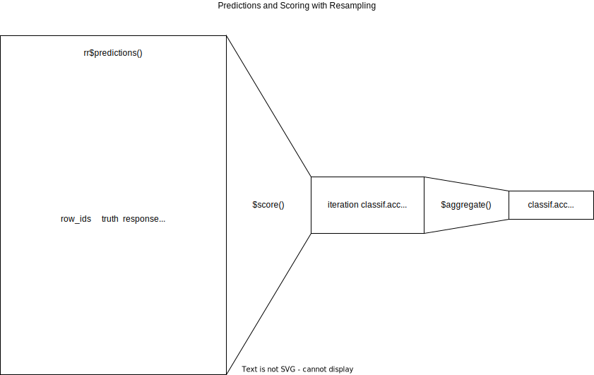
$score() and $aggregate(): The former aggregates predictions to a single score within each resampling iteration, and the former aggregates scores across all resampling folds3.2.5 Inspect ResampleResult Objects
In this section, we show how to inspect some important fields and methods of a ResampleResult object. We first take a glimpse at what is actually contained in the object by converting it to a data.table:
task learner resampling iteration
1: <TaskClassif[50]> <LearnerClassifRpart[38]> <ResamplingCV[20]> 1
2: <TaskClassif[50]> <LearnerClassifRpart[38]> <ResamplingCV[20]> 2
3: <TaskClassif[50]> <LearnerClassifRpart[38]> <ResamplingCV[20]> 3
4: <TaskClassif[50]> <LearnerClassifRpart[38]> <ResamplingCV[20]> 4
1 variable not shown: [prediction]We can see that the task, learner and resampling strategy which we previously passed to the resample() function is stored in list columns of the data.table. In addition, we also have an integer column iteration that refers to the resampling iteration and another list column that contains the corresponding Prediction objects of each iteration. We can access the respective prediction column or directly use the $predictions() method of the ResampleResult object (without converting it to a data.table first) to obtain a list of Prediction objects of each resampling iteration:
[[1]]
<PredictionClassif> for 86 observations:
row_ids truth response prob.Adelie prob.Chinstrap prob.Gentoo
4 Adelie Adelie 0.9722222 0.02777778 0.00
7 Adelie Adelie 0.9722222 0.02777778 0.00
8 Adelie Adelie 0.9722222 0.02777778 0.00
---
328 Chinstrap Chinstrap 0.0800000 0.90000000 0.02
330 Chinstrap Chinstrap 0.0800000 0.90000000 0.02
339 Chinstrap Chinstrap 0.0800000 0.90000000 0.02
[[2]]
<PredictionClassif> for 86 observations:
row_ids truth response prob.Adelie prob.Chinstrap prob.Gentoo
2 Adelie Adelie 0.95575221 0.04424779 0.00000000
3 Adelie Adelie 0.95575221 0.04424779 0.00000000
10 Adelie Adelie 0.95575221 0.04424779 0.00000000
---
326 Chinstrap Chinstrap 0.06818182 0.90909091 0.02272727
329 Chinstrap Chinstrap 0.06818182 0.90909091 0.02272727
333 Chinstrap Chinstrap 0.06818182 0.90909091 0.02272727
[[3]]
<PredictionClassif> for 86 observations:
row_ids truth response prob.Adelie prob.Chinstrap prob.Gentoo
1 Adelie Adelie 0.97500000 0.02500000 0.0000000
5 Adelie Adelie 0.97500000 0.02500000 0.0000000
6 Adelie Adelie 0.97500000 0.02500000 0.0000000
---
340 Chinstrap Gentoo 0.02197802 0.03296703 0.9450549
341 Chinstrap Adelie 0.97500000 0.02500000 0.0000000
342 Chinstrap Chinstrap 0.02127660 0.97872340 0.0000000
[[4]]
<PredictionClassif> for 86 observations:
row_ids truth response prob.Adelie prob.Chinstrap prob.Gentoo
11 Adelie Adelie 0.97321429 0.02678571 0.00000000
12 Adelie Adelie 0.97321429 0.02678571 0.00000000
13 Adelie Adelie 0.97321429 0.02678571 0.00000000
---
338 Chinstrap Chinstrap 0.06122449 0.91836735 0.02040816
343 Chinstrap Chinstrap 0.14285714 0.57142857 0.28571429
344 Chinstrap Chinstrap 0.06122449 0.91836735 0.02040816[1] TRUEThis allows to analyze the predictions of individual intermediate models from each resampling iteration and, e.g., to manually compute a macro-averaged performance estimate. Instead, we can use the $prediction() method to extract a single Prediction object that combines the predictions of each intermediate model arcoss all resampling iterations. The combined prediction object can be used to manually compute a micro-averaged performance estimate, for example:
<PredictionClassif> for 344 observations:
row_ids truth response prob.Adelie prob.Chinstrap prob.Gentoo
4 Adelie Adelie 0.97222222 0.02777778 0.00000000
7 Adelie Adelie 0.97222222 0.02777778 0.00000000
8 Adelie Adelie 0.97222222 0.02777778 0.00000000
---
338 Chinstrap Chinstrap 0.06122449 0.91836735 0.02040816
343 Chinstrap Chinstrap 0.14285714 0.57142857 0.28571429
344 Chinstrap Chinstrap 0.06122449 0.91836735 0.02040816classif.acc
0.9447674 By default, the intermediate models produced at each resampling iteration are discarded after the prediction step to reduce memory consumption of the ResampleResult object and because only the predictions are required to calculate the performance measure. However, it can sometimes be useful to inspect, compare, or extract information from these intermediate models. To do so, we can configure the resample() function to keep the fitted intermediate models by setting the store_models argument to TRUE. Each model trained in a specific resampling iteration is then stored in the resulting ResampleResult object and can be accessed via $learners[[i]]$model, where i refers to the i-th resampling iteration:
n= 258
node), split, n, loss, yval, (yprob)
* denotes terminal node
1) root 258 142 Adelie (0.449612403 0.189922481 0.360465116)
2) flipper_length< 206.5 163 48 Adelie (0.705521472 0.288343558 0.006134969)
4) bill_length< 43.35 116 4 Adelie (0.965517241 0.034482759 0.000000000) *
5) bill_length>=43.35 47 4 Chinstrap (0.063829787 0.914893617 0.021276596) *
3) flipper_length>=206.5 95 3 Gentoo (0.010526316 0.021052632 0.968421053) *Here, we see the model output of a decision tree fitted by the rpart package. As models fitted by rpart provide information on how important features are, we can inspect if the importance varies across the resampling iterations:
[[1]]
flipper_length bill_length bill_depth body_mass island
98.05424 91.31166 73.88313 68.27175 51.43762
[[2]]
bill_length flipper_length bill_depth body_mass island
97.11402 96.05475 76.89306 65.51456 57.70309
[[3]]
flipper_length bill_length bill_depth body_mass island
94.82768 87.05866 77.18128 61.34559 49.95060
[[4]]
bill_length flipper_length bill_depth body_mass island
92.44981 92.39868 74.20080 69.36664 57.28430 Each resampling iteration involves a training step and a prediction step. Learner-specific error or warning messages may occur at each of these two steps. If the learner passed to the resample() function runs in an encapsulated framework that allows logging (see the $encapsulate field of a Learner object), all potential warning or error messages will be stored in the $warnings and $errors fields of the ResampleResult object.
3.2.6 Custom Resampling
Some readers may want to skip this section of the book.
Sometimes it is necessary to perform resampling with custom splits, e.g., to reproduce results reported in a study with pre-defined folds. A custom resampling strategy can be constructed using rsmp("custom"), where the row indices of the observations used for training and testing must be defined manually when instantiated in a task. In the example below, we construct a custom holdout resampling strategy by manually assigning row indices to the $train and $test fields.
The resulting Resampling object can then be used like all other resampling strategies. To show that both sets contain the row indices we have defined, we can inspect the instantiated Resampling object:
int [1:233] 1 2 3 4 5 6 7 8 9 10 ... int [1:100] 51 52 53 54 55 56 57 58 59 60 ...The above is equivalent to a single custom train-test split analogous to the holdout strategy. A custom version of the cross-validation strategy can be constructed using rsmp("custom_cv"). The important difference is that we now have to specify either a custom factor variable (using the f argument of the $instantiate() method) or a factor column (using the col argument of the $instantiate() method) from the data to determine the folds.
In the example below, we instantiate a custom 4-fold cross-validation strategy using a factor variable called folds that contains 4 equally sized levels to define the 4 folds, each with one quarter of the total size of the "penguin" task:
3.2.7 Resampling with Stratification and Grouping
This section of the book might be complex for some readers.
In mlr3, we can assign a special role to a feature contained in the data by configuring the corresponding $col_roles field of a Task. The two relevant column roles that will affect behavior of a resampling strategy are "group" or "stratum".
In some cases, it is desirable to keep observations together when the data is split into corresponding training and test sets, especially when a set of observations naturally belong to a group, e.g., when the data contains repeated measurements of individuals (longitudinal studies) or when dealing with spatial or temporal data. When observations belong to groups, we want to ensure that all observations of the same group belong to either the training set or the test set to prevent any potential leakage of information between training and testing sets. For example, in a longitudinal study, measurements of a person are usually taken at multiple time points. Grouping ensures that the model is tested on data from each person that it has not seen during training, while maintaining the integrity of the person’s measurements across different time points. In this context, the leave-one-out cross-validation strategy can be coarsened to the “leave-one-object-out” cross-validation strategy, where not only a single observation is left out, but all observations associated with a certain group (see Figure 3.4 for an illustration).
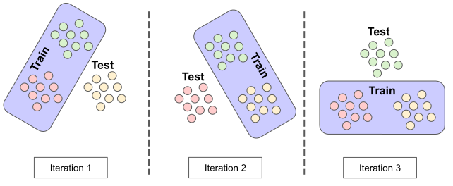
In mlr3, the column role "group" allows to specify the column in the data that defines the group structure of the observations (see also the help page of Resampling for more information on the column role "group"). The column role can be specified by assigning a feature to the $col_roles$group field which will then determine the group structure. The following code performs leave-one-object-out cross-validation using the feature year of the mlr_tasks_penguins task to determine the grouping. Since the feature year contains only three distinct values (i.e., 2007, 2008, and 2009), the corresponding test sets consist of observations from only one year:
task_grp = tsk("penguins")
task_grp$col_roles$group = "year"
r = rsmp("loo")
r$instantiate(task_grp)
table(task_grp$data(cols = "year"))year
2007 2008 2009
110 114 120 year
2007
110 year
2009
120 year
2008
114
Tip
If there are many groups, say 100 groups, we can limit the number of resampling iterations using k-fold cross-validation (or any other resampling strategy with a previously definable number of resampling iterations) instead of performing leave-one-object-out cross-validation. In this case, each group is considered as a single observation, so that the division into training and test sets is done as determined by the resampling strategy
Another column role available in mlr3 is "stratum", which implements stratified sampling. Stratified sampling ensures that one or more discrete features within the training and test sets will have a similar distribution as in the original task containing all observations. This is especially useful when a discrete feature is highly imbalanced and we want to make sure that the distribution of that feature is similar in each resampling iteration. Stratification is commonly used for imbalanced classification tasks where the classes of the target feature are imbalanced (see Figure 3.5 for an illustration). Stratification by the target feature ensures that each intermediate model is fit on training data where the class distribution of the target is representative of the actual task. Otherwise it could happen that target classes are severely under- or over represented in individual resampling iterations, skewing the estimation of the generalization performance.
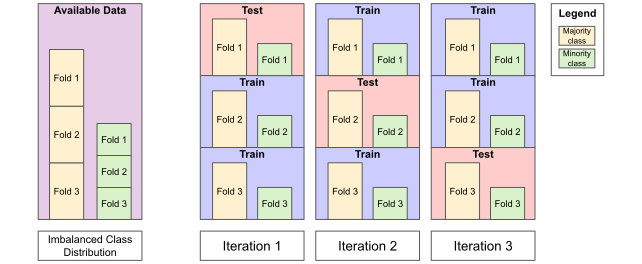
The $col_roles$stratum field of a Task can be set to one or multiple features (including the target in case of classification tasks). In case of multiple features, each combination of the values of all stratification features will form a strata. For example, the target column species of the mlr_tasks_penguins task is imbalanced:
species
Adelie Chinstrap Gentoo
0.4418605 0.1976744 0.3604651 Without specifying a "stratum" column role, the species column may have quite different class distributions across the training and test sets of a 3-fold cross-validation strategy:
r = rsmp("cv", folds = 3)
r$instantiate(task)
prop.table(table(task$data(rows = r$test_set(1), cols = "species")))species
Adelie Chinstrap Gentoo
0.4000000 0.2086957 0.3913043 species
Adelie Chinstrap Gentoo
0.4695652 0.1913043 0.3391304 species
Adelie Chinstrap Gentoo
0.4561404 0.1929825 0.3508772 In the worst case, and especially for highly imbalanced classes, the minority class might be entirely left out of the training set in one or more resampling iterations. Consequently, the intermediate models within these resampling iterations will never predict the minority class, resulting in a misleading performance estimate for any resampling strategy without stratification. Relying on such a misleading performance estimate can have severe consequences for a deployed model, as it will perform poorly on the minority class in real-world scenarios. For example, misclassification of the minority class can have serious consequences in certain applications such as in medical diagnosis or fraud detection, where failing to identify the minority class may result in serious harm or financial losses. Therefore, it is important to be aware of the potential consequences of imbalanced class distributions in resampling and use stratification to mitigate highly unreliable performance estimates. The code below uses species as "stratum" column role to illustrate that the distribution of species in each test set will closely match the original distribution:
task_str = tsk("penguins")
task_str$col_roles$stratum = "species"
r = rsmp("cv", folds = 3)
r$instantiate(task_str)
prop.table(table(task_str$data(rows = r$test_set(1), cols = "species")))species
Adelie Chinstrap Gentoo
0.4396552 0.1982759 0.3620690 species
Adelie Chinstrap Gentoo
0.4434783 0.2000000 0.3565217 species
Adelie Chinstrap Gentoo
0.4424779 0.1946903 0.3628319 Rather than assigning the $col_roles$stratum directly, it is also possible to use the $set_col_roles() method to add or remove columns to specific roles incrementally:
character(0)[1] "species"We can further inspect the current stratification via the $strata field, which returns a data.table of the number of observations (N) and row indices (row_id) of each stratum. Since we stratified by the species column, we expect to see the same class frequencies as when we tabulate the task by the species column:
N row_id
1: 152 1,2,3,4,5,6,...
2: 124 153,154,155,156,157,158,...
3: 68 277,278,279,280,281,282,...species
Adelie Chinstrap Gentoo
152 68 124 Should we add another stratification column, the $strata field will show the same values as when we cross-tabulate the two variables of the task:
N row_id
1: 50 1,2,3,4,5,6,...
2: 50 51,52,53,54,55,56,...
3: 52 101,102,103,104,105,106,...
4: 34 153,154,155,156,157,158,...
5: 46 187,188,189,190,191,192,...
6: 44 233,234,235,236,237,238,...
7: 26 277,278,279,280,281,282,...
8: 18 303,304,305,306,307,308,...
9: 24 321,322,323,324,325,326,... year
species 2007 2008 2009
Adelie 50 50 52
Chinstrap 26 18 24
Gentoo 34 46 443.2.8 Plotting Resample Results
mlr3viz provides a autoplot() method to automatically visualize the resampling results either in a boxplot or histogram:
resampling = rsmp("bootstrap")
rr = resample(task, learner, resampling)
library(mlr3viz)
autoplot(rr, measure = msr("classif.acc"), type = "boxplot")
autoplot(rr, measure = msr("classif.acc"), type = "histogram")`stat_bin()` using `bins = 30`. Pick better value with `binwidth`.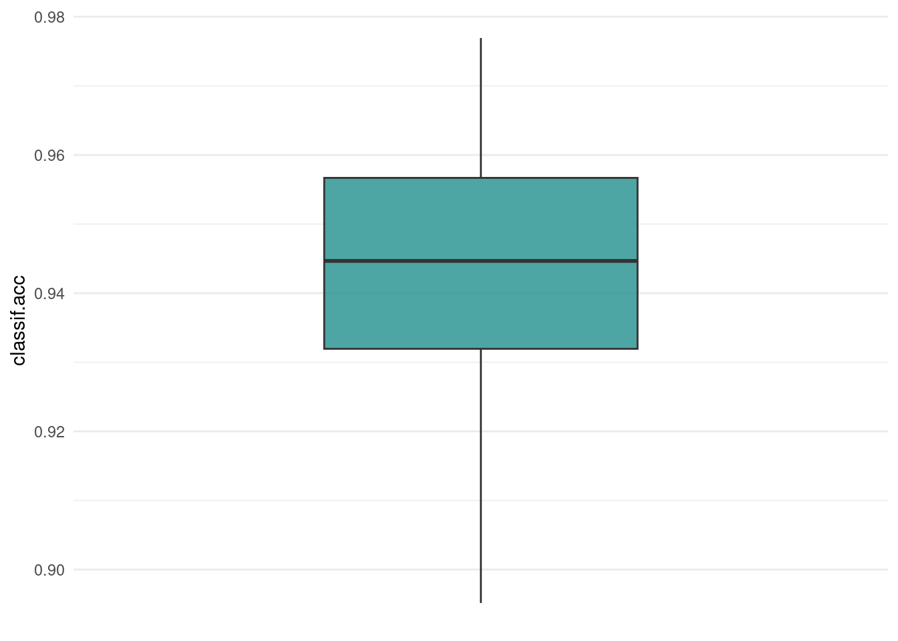
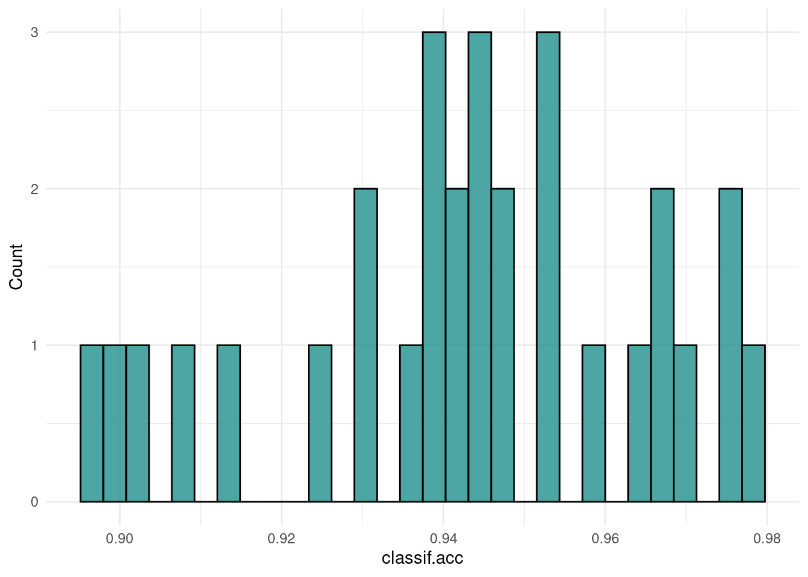
The histogram is useful to visually gauge the variance of the performance results across resampling iterations, whereas the boxplot is often used when multiple learners are compared side-by-side.
We can also visualize a 2-dimensional prediction surface of individual models in each resampling iteration if the task is restricted to two features:
task$select(c("bill_length", "flipper_length"))
resampling = rsmp("cv", folds = 4)
rr = resample(task, learner, resampling, store_models = TRUE)
autoplot(rr, type = "prediction")Warning: Removed 2 rows containing missing values (`geom_point()`).
Prediction surfaces like this are a useful tool for model inspection, as they can help to identify the cause of unexpected performance result. Naturally, they are also popular for didactical purposes to illustrate the prediction behaviour of different learning algorithms, such as the classification tree in the example above with its characteristic orthogonal lines.
3.3 Benchmarking
Benchmarking in supervised machine learning refers to the comparison of different learners on a single task or multiple tasks. When comparing learners on a single task or on a domain consisting of multiple similar tasks, the main aim is often to rank the learners according to a pre-defined performance measure and to identify the best-performing learner for the considered task or domain. In an applied setting, benchmarking may be used to evaluate whether a deployed model used for a given task or domain can be replaced by a better alternative solution. When comparing multiple learners on multiple tasks, the main aim is often more of a scientific nature, e.g., to gain insights into how different learners perform in different data situations or whether there are certain data properties that heavily affect the performance of certain learners (or certain hyperparameter of learners). For example, it is common practice for algorithm designers to analyze the generalization performance or runtime of a newly proposed learning algorithm in a benchmark study where it has been compared with existing learners. In Section 3.3, we provide code examples for conducting benchmark studies and performing statistical analysis of benchmark results using the mlr3 package.
The mlr3 package offers the convenience function benchmark() to conduct a benchmark experiment. The function internally runs the resample() function on each task separately. The provided resampling strategy is instantiated on each task to ensure a fair comparison by training and evaluating multiple learners under the same conditions. This means that all provided learners use the same train-test splits for each task. In this section, we cover how to
- construct a benchmark design (Section 3.3.1) to define the benchmark experiments to be performed,
- run the benchmark experiments (Section 3.3.2) and aggregate their results, and
- convert benchmark objects (Section 3.3.3) to other types of objects that can be used for different purposes.
3.3.1 Constructing Benchmarking Designs
In mlr3, we can define a design to perform benchmark experiments via the benchmark_grid() convenience function. The design is essentially a table of scenarios to be evaluated and usually consists of unique combinations of Task, Learner and Resampling triplets.
The benchmark_grid() function constructs an exhaustive design to describe which combinations of learner, task and resampling should be used in a benchmark experiment. It properly instantiates the used resampling strategies so that all learners are evaluated on the same train-test splits for each task, ensuring a fair comparison. To construct a list of Task, Learner and Resampling objects, we can use the convenience functions tsks(), lrns(), and rsmps().
We design an exemplary benchmark experiment and train a classification tree from the rpart package, a random forest from the ranger package and a featureless learner serving as a baseline on four different binary classification tasks. The constructed benchmark design is a data.table containing the task, learner, and resampling combinations in each row that should be performed:
library("mlr3verse")
tsks = tsks(c("german_credit", "sonar", "breast_cancer"))
lrns = lrns(c("classif.ranger", "classif.rpart", "classif.featureless"),
predict_type = "prob")
rsmp = rsmps("cv", folds = 5)
design = benchmark_grid(tsks, lrns, rsmp)
head(design) task learner resampling
1: <TaskClassif[50]> <LearnerClassifRanger[38]> <ResamplingCV[20]>
2: <TaskClassif[50]> <LearnerClassifRpart[38]> <ResamplingCV[20]>
3: <TaskClassif[50]> <LearnerClassifFeatureless[38]> <ResamplingCV[20]>
4: <TaskClassif[50]> <LearnerClassifRanger[38]> <ResamplingCV[20]>
5: <TaskClassif[50]> <LearnerClassifRpart[38]> <ResamplingCV[20]>
6: <TaskClassif[50]> <LearnerClassifFeatureless[38]> <ResamplingCV[20]>Since the data.table contains R6 columns within list-columns, we unfortunately can not infer too much about task column, but the ids utility function can be used for quick inspection or subsetting:
[1] "german_credit" "german_credit" "german_credit" "sonar"
[5] "sonar" "sonar" "breast_cancer" "breast_cancer"
[9] "breast_cancer" task learner resampling
1: <TaskClassif[50]> <LearnerClassifRanger[38]> <ResamplingCV[20]>
2: <TaskClassif[50]> <LearnerClassifRpart[38]> <ResamplingCV[20]>
3: <TaskClassif[50]> <LearnerClassifFeatureless[38]> <ResamplingCV[20]>It is also possible to subset the design, e.g., to exclude a specific task-learner combination by manually removing a certain row from the design which is a data.table. Alternatively, we can also construct a custom benchmark design by manually defining a data.table containing task, learner, and resampling objects (see also the examples section in the help page of benchmark_grid()).
3.3.2 Execution of Benchmark Experiments
To run the benchmark experiment, we can pass the constructed benchmark design to the benchmark() function, which will internally call resample() for all the combinations of task, learner, and resampling strategy in our benchmark design:
<BenchmarkResult> of 45 rows with 9 resampling runs
nr task_id learner_id resampling_id iters warnings errors
1 german_credit classif.ranger cv 5 0 0
2 german_credit classif.rpart cv 5 0 0
3 german_credit classif.featureless cv 5 0 0
4 sonar classif.ranger cv 5 0 0
5 sonar classif.rpart cv 5 0 0
6 sonar classif.featureless cv 5 0 0
7 breast_cancer classif.ranger cv 5 0 0
8 breast_cancer classif.rpart cv 5 0 0
9 breast_cancer classif.featureless cv 5 0 0Once the benchmarking is finished (this can take some time, depending on the size of your design), we can aggregate the performance results with the $aggregate() method of the returned BenchmarkResult:
task_id learner_id classif.acc
1: german_credit classif.ranger 0.7640000
2: german_credit classif.rpart 0.7230000
3: german_credit classif.featureless 0.7000000
4: sonar classif.ranger 0.8082462
5: sonar classif.rpart 0.6535424
6: sonar classif.featureless 0.5336818
7: breast_cancer classif.ranger 0.9721662
8: breast_cancer classif.rpart 0.9443431
9: breast_cancer classif.featureless 0.6500537As the results are shown in a data.table, we can easily aggregate the results even further. For example, if we are interested in the learner that performed best across all tasks, we could average the performance of each individual learner across all tasks. Please note that averaging accuracy scores across multiple tasks as in this example is not always appropriate for comparison purposes. A more common alternative to compare the overall algorithm performance across multiple tasks is to first compute the ranks of each learner on each task separately and then compute the average ranks. For illustration purposes, we show how to average the performance of each individual learner across all tasks:
learner_id mean_accuracy
1: classif.ranger 0.8481375
2: classif.rpart 0.7736285
3: classif.featureless 0.6279118Ranking the performance scores can either be done via standard data.table syntax, or more conveniently with the mlr3benchmark package. We first use as.BenchmarkAggr to aggregate the BenchmarkResult using our measure, after which we use the $rank_data() method to convert the performance scores to ranks. The minimize argument is used to indicate that the classification accuracy should not be minimized, i.e. a higher score is better.
library("mlr3benchmark")
bma = as.BenchmarkAggr(bmr, measures = msr("classif.acc"))
bma$rank_data(minimize = FALSE) german_credit sonar breast_cancer
ranger 1 1 1
rpart 2 2 2
featureless 3 3 3This results in per-task rankings of the three learners. Unsurprisingly, the featureless learner ranks last, as it always predicts the majority class. However, it is common practice to include it as a baseline in benchmarking experiments to easily gauge the relative performance of other algorithms. In this simple benchmark experiment, the random forest ranked first, outperforming a single classification tree as one would expect.
3.3.3 Inspect BenchmarkResult Objects
A BenchmarkResult object is a collection of multiple ResampleResult objects. We can analogously use as.data.table to take a look at the contents and compare them to the data.table of the ResampleResult from the previous section (rrdt):
[1] "uhash" "task" "learner" "resampling" "iteration"
[6] "prediction"[1] "task" "learner" "resampling" "iteration" "prediction"By the column names alone, we see that the general contents of a BenchmarkResult and ResampleResult which we specified in Section 3.2.5 is very similar, with the additional unique identification column "uhash" in the former being the only difference.
The stored ResampleResults can be extracted via the $resample_result(i) method, where i is the index of the performed benchmark experiment. This allows us to investigate the extracted ResampleResult or individual resampling iterations as shown previously (see Section 3.2).
<ResampleResult> of 5 iterations
* Task: german_credit
* Learner: classif.ranger
* Warnings: 0 in 0 iterations
* Errors: 0 in 0 iterations<ResampleResult> of 5 iterations
* Task: german_credit
* Learner: classif.rpart
* Warnings: 0 in 0 iterations
* Errors: 0 in 0 iterationsMultiple ResampleResult can be again converted to a BenchmarkResult with the function as_benchmark_result() and combined with c():
bmr1 = as_benchmark_result(rr1)
bmr2 = as_benchmark_result(rr2)
bmr_combined = c(bmr1, bmr2)
bmr_combined$aggregate(msr("classif.acc")) nr resample_result task_id learner_id resampling_id iters
1: 1 <ResampleResult[21]> german_credit classif.ranger cv 5
2: 2 <ResampleResult[21]> german_credit classif.rpart cv 5
1 variable not shown: [classif.acc]Combining multiple BenchmarkResults into a larger result object can be useful if related benchmarks where computed on different machines.
Similar to creating automated visualizations for tasks, predictions, or resample results, the mlr3viz package also provides a autoplot() method to visualize benchmark results, by default as a boxplot:
Such a plot summarizes the benchmark experiment across all tasks and learners. Visualizing performance scores across all learners and tasks in a benchmark helps identifying potentially unexpected behavior, such as a learner performing reasonably well for most tasks, but yielding noticeably worse scores in one task. In the case of our example above, the three learners show consistent relative performance to each other, in the order we would expect.
3.3.4 Statistical Tests
Some readers may want to skip this section of the book.
The package mlr3benchmark we previously used for ranking also provides infrastructure for applying statistical significance tests on BenchmarkResult objects. Currently, Friedman tests and pairwise Friedman-Nemenyi tests (Demšar 2006) are supported to analyze benchmark experiments with at least two independent tasks and at least two learners.
$friedman_posthoc() can be used for a pairwise comparison:
Pairwise comparisons using Nemenyi-Wilcoxon-Wilcox all-pairs test for a two-way balanced complete block designdata: acc and learner_id and task_id ranger rpart
rpart 0.438 -
featureless 0.038 0.438
P value adjustment method: single-stepThese results would indicate a statistically significant difference between the "featureless" learner and "ranger", assuming a 95% confidence level.
The results can be summarized in a critical difference plot which typically shows the mean rank of a learning algorithm on the x-axis along with a thick horizontal line that connects learners which are not significantly different:
Similar to the test output before, this visualization leads to the conclusion that the "featureless" learner and "ranger" are significantly different, whereas the critical rank difference of 1.66 is not exceed for the comparison of the "featureless" learner, "rpart" and "ranger", respectively.
3.4 ROC Analysis
ROC (Receiver Operating Characteristic) analysis is widely used to evaluate binary classifiers. Although extensions for multiclass classifiers exist (see e.g., Hand and Till (2001)), we will only cover the much easier binary classification case here. For binary classifiers that predict discrete classes, we can compute a confusion matrix which computes the following quantities (see also Figure 3.6):
- True positives (TP): Instances that are actually positive and correctly classified as positive.
- True negatives (TN): Instances that are actually negative and correctly classified as negative.
- False positives (FP): Instances that are actually negative but incorrectly classified as positive.
- False negatives (FN): Instances that are actually positive but incorrectly classified as negative.
There are a multitude of performance measures that can be derived from a confusion matrix. Unfortunately, many of them have different names for historical reasons, originating from different fields. For a good overview of common confusion matrix-based measures, see the comprehensive table on Wikipedia1 which also provides many common aliases for each measure.
3.4.1 Confusion Matrix-based Measures
Some common performance measures that are based on the confusion matrix and measure the ability of a classifier to separate the two classes (i.e., discrimination performance) include (see also Figure 3.6 for their definition based on TP, FP, TN and FN):
- True Positive Rate (TPR), Sensitivity or Recall: How many of the true positives did we predict as positive?
- True Negative Rate (TNR) or Specificity: How many of the true negatives did we predict as negative?
- False Positive Rate (FPR), or 1 - Specificity: How many of the true negatives did we predict as positive?
- Positive Predictive Value (PPV) or Precision: If we predict positive how likely is it a true positive?
- Negative Predictive Value (NPV): If we predict negative how likely is it a true negative?
- Accuracy (ACC): The proportion of correctly classified instances out of the total number of instances.
- F1-score: The harmonic mean of precision and recall, which balances the trade-off between precision and recall. It is calculated as \(2 \times \frac{Precision \times Recall}{Precision + Recall}\).

In the code example below, we first retrieve the mlr_tasks_german_credit task which is a binary classification task and construct a random forest learner using classif.ranger that predicts probabilities using the predict_type = "prob" option. Next, we use the partition() helper function which acts as a convenience shortcut function to the "holdout" resampling strategy to randomly partition the contained data into two disjoint set. We train the learner on the training set and use the trained model to generate predictions on the test set. Finally, we retrieve the confusion matrix from the resulting Prediction object by accessing the $confusion field (see also Section 2.4.3):
task = tsk("german_credit")
learner = lrn("classif.ranger", predict_type = "prob")
splits = partition(task, ratio = 0.8)
learner$train(task, splits$train)
pred = learner$predict(task, splits$test)
pred$confusion truth
response good bad
good 125 31
bad 15 29The mlr3measures package allows to additionally compute several common confusion matrix-based measures using the confusion_matrix function:
mlr3measures::confusion_matrix(truth = pred$truth,
response = pred$response, positive = task$positive) truth
response good bad
good 125 31
bad 15 29
acc : 0.7700; ce : 0.2300; dor : 7.7957; f1 : 0.8446
fdr : 0.1987; fnr : 0.1071; fomr: 0.3409; fpr : 0.5167
mcc : 0.4162; npv : 0.6591; ppv : 0.8013; tnr : 0.4833
tpr : 0.8929 If a binary classifier predicts probabilities instead of discrete classes, we could arbitrarily set a threshold to cut-off the probabilities and assign them to the positive and negative class. When it comes to classification performance, it is generally difficult to achieve a high TPR and low FPR simultaneously because there is often a trade-off between the two rates. Increasing the threshold for identifying the positive cases, leads to a higher number of negative predictions and fewer positive predictions. As a consequence, the FPR is usually better (lower), but at the cost of a worse (lower) TPR. For example, in the special case where the threshold is set too high and no instance is predicted as positive, the confusion matrix shows zero true positives (no instances that are actually positive and correctly classified as positive) and zero false positives (no instances that are actually negative but incorrectly classified as positive). Therefore, the FPR and TPR are also zero since there are zero false positives and zero true positives. Conversely, lowering the threshold for identifying positive cases may never predict the negative class and can increase (improve) TPR, but at the cost of a worse (higher) FPR. For example, below we set the threshold to 0.99 and 0.01 for the mlr_tasks_german_credit task to illustrate the two special cases explained above where zero positives and where zero negatives are predicted and inspect the resulting confusion matrix-based measures (some measures can not be computed due to division by 0 and therefore will produce NaN values):
truth
response good bad
good 0 0
bad 140 60
acc : 0.3000; ce : 0.7000; dor : NaN; f1 : NaN
fdr : NaN; fnr : 1.0000; fomr: 0.7000; fpr : 0.0000
mcc : 0.0000; npv : 0.3000; ppv : NaN; tnr : 1.0000
tpr : 0.0000 truth
response good bad
good 140 60
bad 0 0
acc : 0.7000; ce : 0.3000; dor : NaN; f1 : 0.8235
fdr : 0.3000; fnr : 0.0000; fomr: NaN; fpr : 1.0000
mcc : 0.0000; npv : NaN; ppv : 0.7000; tnr : 0.0000
tpr : 1.0000 3.4.2 ROC Space
ROC analysis aims at evaluating the performance of classifiers by visualizing the trade-off between the TPR and the FPR which can be obtained from a confusion matrix. Each classifier that predicts discrete classes, will be a single point in the ROC space (see Figure 3.7, panel (a)). The best classifier lies on the top-left corner where the TPR is 1 and the FPR is 0. Classifiers on the diagonal predict class labels randomly (possibly with different class proportions). For example, if each positive instance will be randomly classified with 25% as to the positive class, we get a TPR of 0.25. If we assign each negative instance randomly to the positive class, we get a FPR of 0.25. In practice, we should never obtain a classifier clearly below the diagonal. Swapping the predicted classes of a classifier would results in points in the ROC space being mirrored at the diagonal baseline. A point in the ROC space below the diagonal might indicate that the positive and negative class labels have been switched by the classifier.
Using different thresholds to cut-off predicted probabilities and assign them to the positive and negative class may lead to different confusion matrices. In this case, we can characterize the behavior of a binary classifier for different thresholds by plotting the TPR and FPR values — this is the ROC curve. For example, we can use the previous Prediction object, compute all possible TPR and FPR combinations if we use all predicted probabilities as possible threshold, and visualize them to manually create a ROC curve:
thresholds = sort(pred$prob[,1])
rocvals = data.table::rbindlist(lapply(thresholds, function(t) {
pred$set_threshold(t)
data.frame(
threshold = t,
FPR = pred$score(msr("classif.fpr")),
TPR = pred$score(msr("classif.tpr"))
)
}))
head(rocvals) threshold FPR TPR
1: 0.2351119 0.9833333 1
2: 0.2357222 0.9666667 1
3: 0.2404476 0.9500000 1
4: 0.2616540 0.9500000 1
5: 0.2799230 0.9166667 1
6: 0.2829881 0.9166667 1library(ggplot2)
ggplot(rocvals, aes(FPR, TPR)) +
geom_point() +
geom_path(color = "darkred") +
geom_abline(linetype = "dashed") +
coord_fixed(xlim = c(0, 1), ylim = c(0, 1)) +
labs(
title = "Manually constructed ROC curve",
x = "1 - Specificity (FPR)",
y = "Sensitivity (TPR)"
) +
theme_bw()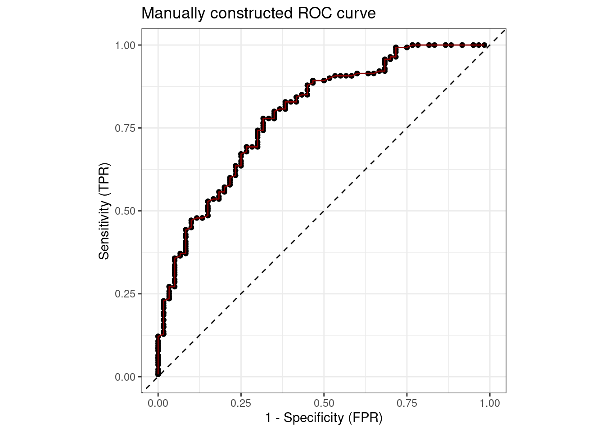
A natural performance measure that can be derived from the ROC curve is the area under the curve (AUC). The higher the AUC value, the better the performance, whereas a random classifier would result in an AUC of 0.5 (see Figure 3.7, panel (b) for an illustration). The AUC can be interpreted as the probability that a randomly chosen positive instance is ranked higher (in the sense that it gets a higher predicted probability of belonging to the positive class) by the classification model than a randomly chosen negative instance.
![Panel (a): ROC space with best discrete classifier, two random guessing classifiers lying on the diagonal line (baseline), one that always predicts the positive class and one that never predicts the positive class, and three classifiers C1, C2, C3. We cannot say if C1 or C3 is better as both lie on a parallel line to the baseline. C2 is clearly dominated by C1, C3 as it is further away from the best classifier at (TPR = 1, FPR = 0). Panel (b): ROC curves of the best classifier (AUC = 1), of a random guessing classifier (AUC = 0.5), and the classifiers C1, C3, and C2.](performance_files/figure-html/fig-roc-1.png)
For mlr3 prediction objects, the ROC curve can be constructed with the previously seen autoplot.PredictionClassif from mlr3viz. The x-axis showing the FPR is labelled “1 - Specificity” by convention, whereas the y-axis shows “Sensitivity” for the TPR.
We can also plot the precision-recall (PR) curve which visualize the PPV vs. TPR. The main difference between ROC curves and PR curves is that the number of true-negatives are not used to produce a PR curve. PR curves are preferred over ROC curves for imbalanced populations. This is because the positive class is usually rare in imbalanced classification tasks. Hence, the FPR is often low even for a random classifier. As a result, the ROC curve may not provide a good assessment of the classifier’s performance, because it does not capture the high rate of false negatives (i.e., misclassified positive observations). See also Davis and Goadrich (2006) for a detailed discussion about the relationship between the PRC and ROC curves.
Another useful way to think about the performance of a classifier is to visualize the relationship of the set threshold with the performance metric at the given threshold. For example, if we want to see the FPR and accuracy across all possible thresholds:
autoplot(pred, type = "threshold", measure = msr("classif.fpr"))
autoplot(pred, type = "threshold", measure = msr("classif.acc"))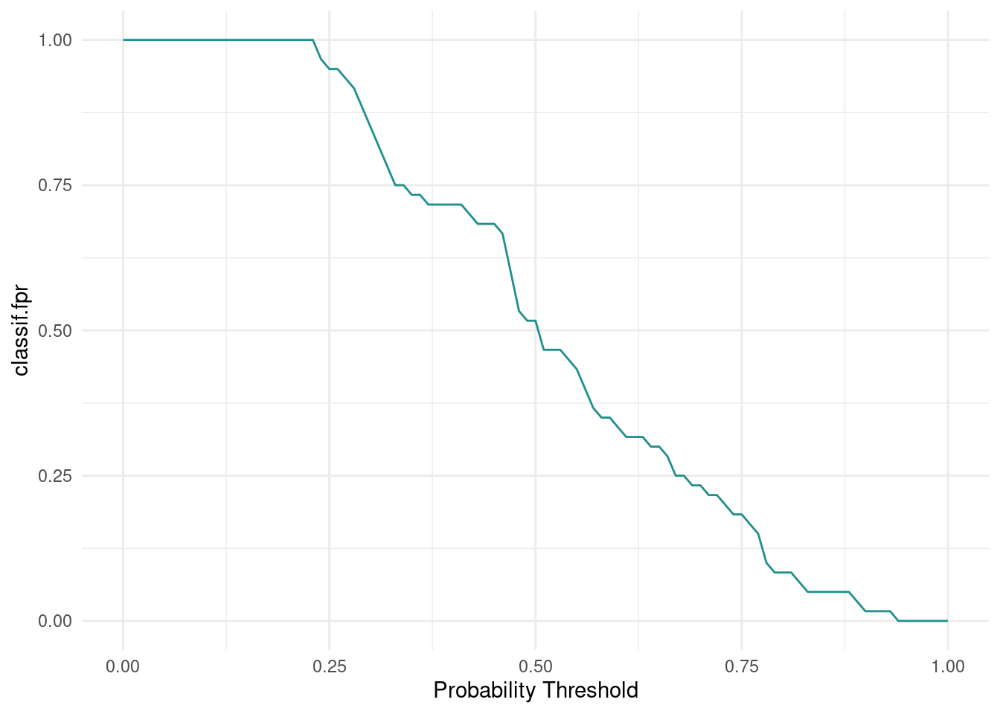
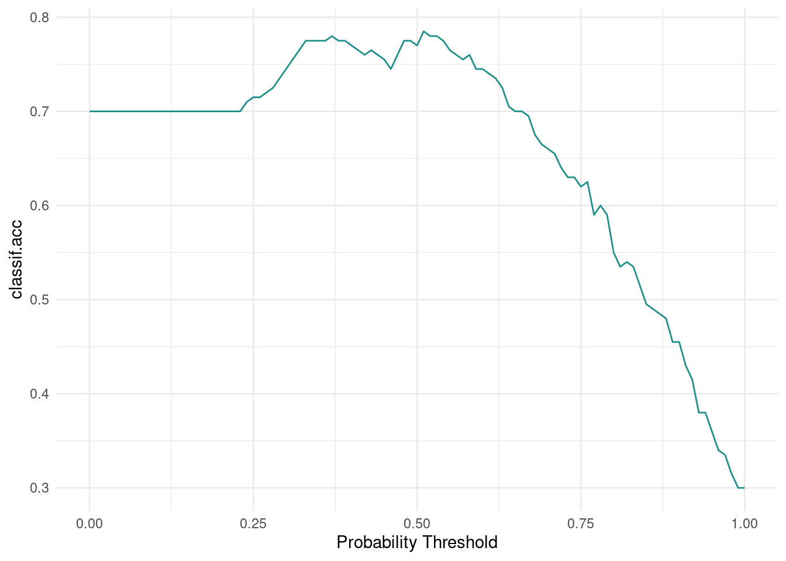
This visualization would show us that it would not matter if we picked a threshold of 0.5 or 0.75, since neither FPR nor accuracy changes in that range.
These visualizations are also available for ResampleResult. Here, the predictions of individual resampling iterations are merged prior to calculating a ROC or PR curve (micro-averaged):
rr = resample(
task = tsk("german_credit"),
learner = lrn("classif.ranger", predict_type = "prob"),
resampling = rsmp("cv", folds = 5)
)
autoplot(rr, type = "roc")
autoplot(rr, type = "prc")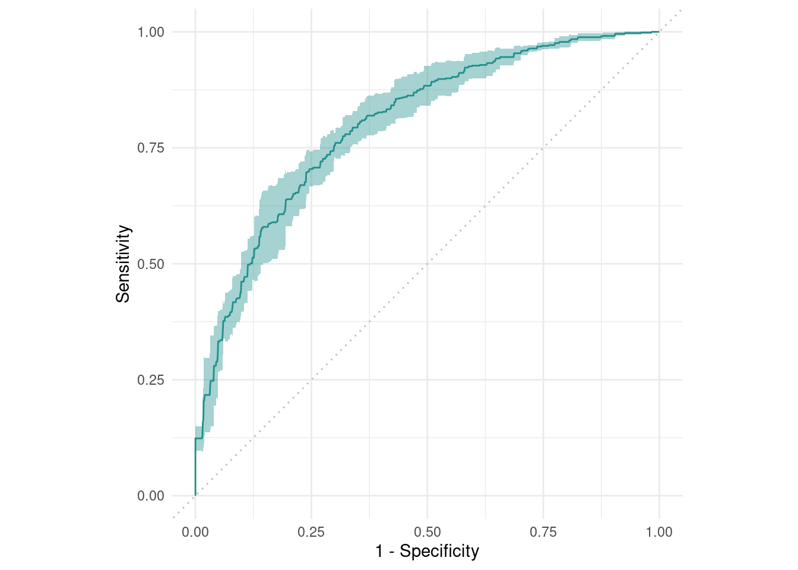
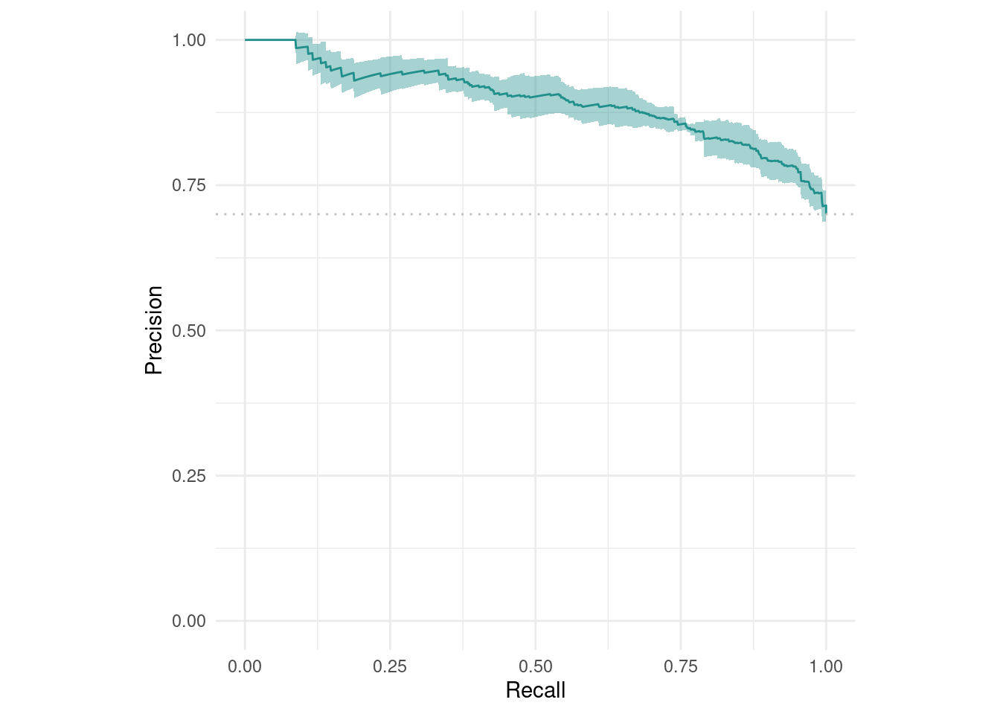
We can also visualize a BenchmarkResult to compare multiple learners on the same Task:
3.5 Conclusion
In this chapter, we learned how to estimate the generalization performance of a model via resampling. We also learned about benchmarking to fairly compare the estimated generalization performance of different learners across multiple tasks. Performance calculations underpin these concepts, and we have seen some of them applied to classification tasks, with a more in-depth look at the special case of binary classification and ROC analysis. We also learned how to visualize confusion matrix-based performance measures with regards to different thresholds as well as resampling and benchmark results with mlr3viz. The discussed topics belong to the fundamental concepts of supervised machine learning. Chapter 4 builds on these concepts and applies them for tuning (i.e., to automatically choose the optimal hyperparameters of a learner) through nested resampling (Section 4.5). In Chapter 8, we will also take a look at specialized tasks that require different resampling strategies. Finally, Table 3.1 provides an overview of some important mlr3 functions and the corresponding R6 classes that were most frequently used throughout this chapter.
| S3 function | R6 Class | Summary |
|---|---|---|
rsmp() |
Resampling |
Assigns observations to train- and test sets |
resample() |
ResampleResult |
Evaluates learners on given tasks using a resampling strategy |
benchmark_grid() |
- | Constructs a design grid of learners, tasks, and resamplings |
benchmark() |
BenchmarkResult |
Evaluates learners on a given design grid |
Resources
- Learn more about advanced resampling techniques in: Resampling - Stratified, Blocked and Predefined2.
- Check out the blog post mlr3 Basics on “Iris” - Hello World!3 to see minimal examples on using resampling and benchmarking on the iris dataset.
- Use resampling and benchmarking for the comparison of decision boundaries of classification learners4.
- Learn how to effectively pick thresholds by applying tuning and pipelines (Chapters 4 and 6) in this post on threshold tuning5.
3.6 Exercises
Use the
spamtask and 5-fold cross-validation to benchmark Random Forest (classif.ranger), Logistic Regression (classif.log_reg), and XGBoost (classif.xgboost) with regards to AUC. Which learner appears to do best? How confident are you in your conclusion? How would you improve upon this?A colleague claims to have achieved a 93.1% classification accuracy using the
classif.rpartlearner on thepenguins_simpletask. You want to reproduce their results and ask them about their resampling strategy. They said they used 3-fold cross-validation, and they assigned rows using the task’srow_idmodulo 3 to generate three evenly sized folds. Reproduce their results using the custom CV strategy.